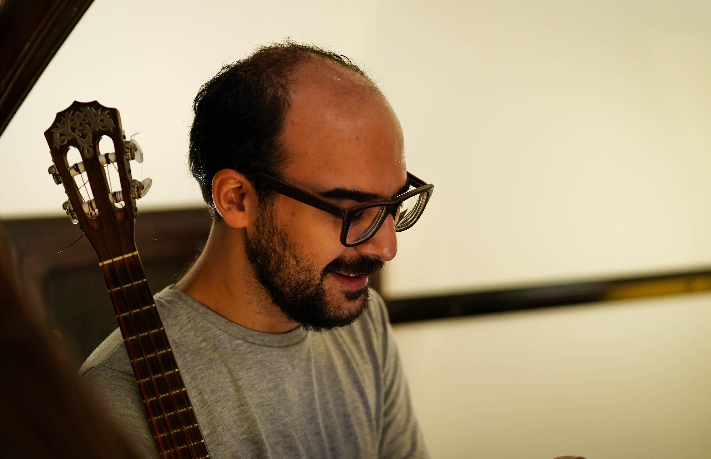
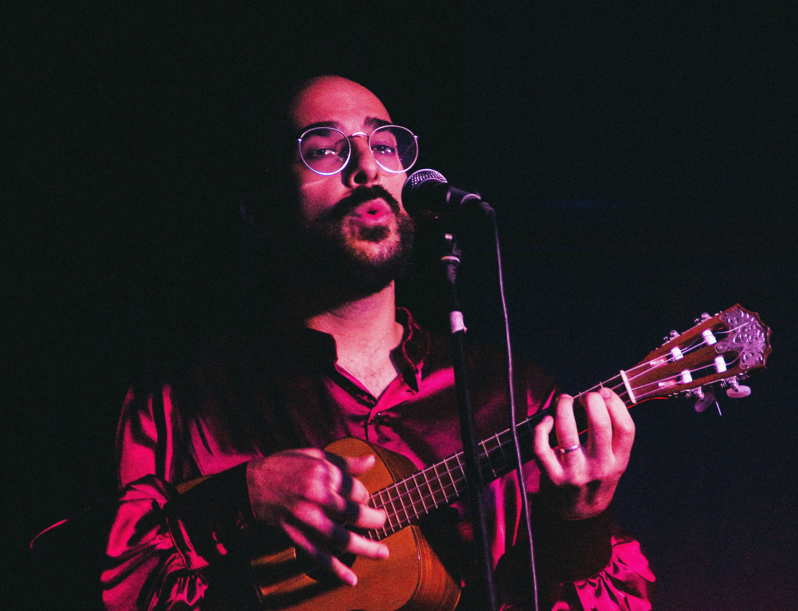

Julián Rodríguez nació en Buenos Aires, Argentina, el 23 de octubre de 1993.
Desde pequeño se interesó por el arte, y empezó a hacer música junto a sus amigos luego de que sus padres le regalaran un ukelele para su cumpleaños de quince. Unos años después, en 2011, fundó el grupo
Café Turrone con algunos compañeros de la escuela secundaria, un cuarteto de swing, tango y música latinoamericana con el que Julián grabó sus primeras canciones en ukelele y realizó conciertos en Buenos Aires, Córdoba y Uruguay.
Con
Nacho Castillo formaron unos años después el dúo de jazz e improvisación libre
Rodríguez/Castillo. Luego de grabar algunas canciones originales junto a Ezequiel Agüero en el contrabajo, el dúo resultó seleccionado como uno de los ganadores del certamen Estudio Urbano. En ese contexto, grabaron
Nuevas oposiciones, un álbum de composiciones propias e improvisaciones en guitarra y ukelele editado en 2016.
En 2017 fundó junto a Nicolás Arévalo y Juan Kiss el trío vocal de boleros y canciones románticas
Los de Seda. El trío debutó como parte del espectáculo teatral
#Citatextual, que realizó tres temporadas en escenarios del teatro off porteño, y editó en 2020 su álbum debut
Los de Seda. Años después, Los de Seda conformó un septeto junto a Leo Valle, Marcos Díaz, Julián López di Muro y Manuel Delrío y lanzó
Los de Seda y el Gitano, un homenaje en clave de bolero a la música de Sandro.
Como intérprete solista de ukelele, Julián se dedica a interpretar tango y folklore, buscando integrar su instrumento a la tradición de la música popular argentina.
Editó
Haciendo Bardi (2019) y
Salitrales no lloren (2020), dos álbumes de arreglos originales de músicas de Agustín Bardi y el Cachilo Díaz respectivamente. En 2021 lanzó
Año nuevo, su primer trabajo de composiciones propias, junto con un libro que reúne todas las partituras del álbum. En la actualidad, Julián está produciendo un álbum de larga duración de tangos clásicos y composiciones propias.
El interés por la música popular en general también motivó la producción de algunos de sus proyectos audiovisuales. Junto a Martina Cruz, produjo
Mis tangos favoritos, un pódcast en el que explora las letras del tango junto a la poeta Martina Cruz. Mientras tanto, en su canal de YouTube, Julián realiza esporádicamente
ensayos y breves documentales sobre temáticas relacionadas con la música argentina.
Además de su carrera como músico en escenarios, Julián es egresado del Profesorado de Educación Musical de la Escuela de Música Popular de Avellaneda (EMPA) y se dedica a impartir clases de ukelele y música en general para personas de todas las edades.
